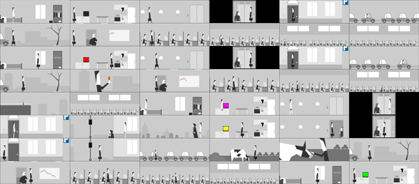

"A short existential game about alienation and refusal of labor.
Or, if you prefer, a playable music video."
I felt a trace of Tale of Tales' The Path - in order to fully experience and "finish" the game the player is required to essentially do the opposite of what the character is told; the opposite of conventional designer-dictated narrative. "Don't stray from the path" as "Get to your cubicle."
One could play the game forever, but the monotony of the looping routine gradually becomes agonizing.
Suicide is a game element but is used in an odd way that can't quite seem to decide if it wants to be reminiscent of "Groundhog Day" or "Moon."

Some of the most memorable moments are those of player-initiated absurdity. Standing alone in a field in your underwear with a cow, while your idling car blocks traffic being one. Most of it involves being in your underwear, actually.
A curiosity about this "follow/don't follow", "do what i say" or "don't do what i say to do" binary is that in the end, everyone can pretty much discern the ultimate intent of the game designer, following an initial mental re-adjustment, but again, that's the point, isn't it?
Are the only true player-subversions of perceived or actual designer intentions through cheating, bugs, or exploits, or is it in unexplored emergence? The latter is an exploration of systems and mechanics interplay, whereas the former can be supplemented with player-constructed narrative explanation? Narrative fallacy?
I found the game to be more contemplative than subversive, and ultimately bleak, but moments of beauty persist.